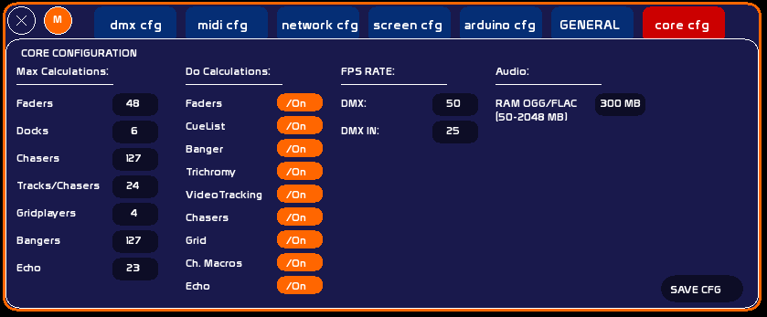

Table des matières
Configuration Core
WhiteCat n'est pas seulement un séquenciel, et les calculs en arrière plan sont conséquents, même pour de la lumière:
- 1 buffer séquenciel de 512 circuits
- 48 * 7 buffers de 512 circuits pour les faders
- 1 buffer de 512 circuits pour le tracking video
- 8 buffers de 512 circuits pour la trichromie
- 128 * 24 buffers de 512 circuits pour les chasers
- 4 buffers de 512 circuits pour les grid players
- 4 macros par circuit
La fenêtre de configuration du coeur de WhiteCat permet donc d'alléger les procédures pour les petites machines.
Vous pouvez donc customiser les options générales, ou tout simplement ne pas exécuter en mettant off le calcul des buffers sélectionnables:

Max. Calculations
Si On, définit le nombre maximum de:
- Faders (48)
- Docks par fader (6)
- Chasers (127)
- Pistes par chaser (24)
- GridPlayers (4)
- Bangers (127)
Do Calculations
Enclenche ou désenclenche le calcul pour:
- les faders
- la cuelist ( séquenciel)
- les bangers
- la trichromie
- le tracking video
- les chasers
- les gridplayers
- les channels macros
Mis en off, le calcul des buffers et les fonctions découlant de cette famille ( LFO, crossfade, chaser time, etc…) sont retirées du rendu.
Toutes ces options sont sauvées dans le dossier /user fichier config_core.txt.
Attention, désactiver CueList bloque les faders en direct channel.
FPS rate
FPS est la contraction de Frame Per Second: le nombre de fois qu'une action est faite par secondes.
Dans cette colonne vous pourrez donc modifier:
DMX rate
- le FPS de l'émission DMX: vous pouvez donc passer du 50ème au 100ème de secondes ( minima 40ème pour signal “fluide”). Pourquoi le 100ème ? des questions de synchro, des questions de matériaux ( LEDS).
- le FPS du DMX IN: du 25ème au 50ème.
Audio
Les fichiers .ogg et .flac sont chargés intégralement en RAM au moment du chargement dans un lecteur. Ce mécanisme garantit une lecture fluide, sans saut ni latence de décodage, même en mode CUE ou boucle. Les fichiers .wav et .mp3 ne sont pas concernés : ils utilisent leurs propres mécanismes de chargement.
Si un fichier OGG ou FLAC dépasse la limite configurée, il est lu en mode dégradé — la lecture reste possible mais peut présenter des irrégularités (repositionnement moins précis, légère latence au démarrage).Dans cette colonne vous pourrez donc modifier:
RAM ogg/flac
- Plage : 50 à 2048 MB
- Valeur par défaut : 300 MB
- Saisir la valeur dans le champ, puis cliquer dessus pour valider.

Le tableau ci-dessous donne un ordre de grandeur de la RAM occupée selon la durée et le format (valeurs approximatives) :
| Durée | OGG ~128 kbps | OGG ~256 kbps | FLAC stéréo 44,1 kHz 16 bit | FLAC stéréo 96 kHz 24 bit |
|---|---|---|---|---|
| 1 min | ~1 MB | ~2 MB | ~6 MB | ~18 MB |
| 5 min | ~5 MB | ~10 MB | ~29 MB | ~88 MB |
| 10 min | ~9 MB | ~19 MB | ~59 MB | ~176 MB |
| 30 min | ~28 MB | ~56 MB | ~176 MB | ~528 MB ⚠ |
| 1 heure | ~57 MB | ~113 MB | ~352 MB ⚠ | ~1056 MB ⚠ |
| 2 heures | ~113 MB | ~225 MB | ~704 MB ⚠ | ~2112 MB ⚠ |
⚠ = dépasse la limite par défaut de 300 MB → lecture en mode dégradé. Augmenter la limite RAM si nécessaire.
Conseils : augmenter la limite si vos fichiers OGG/FLAC sont volumineux et que la machine dispose de suffisamment de RAM. Réduire sur les configurations à faible mémoire.